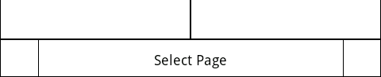
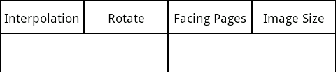

How to operate the Text Viewer
The following is a machine translation.
Content is not checked.
This section describes how to operate the display screen image.
How to work
Scroll the image
If you see an image off the screen with,and then scroll through by swiping your part except for the top / bottom of the screen.
Transition to the Previous Page / Next Page
Go to the previous page next page at the tap, tap on the left side of the part on the right except for the top / bottom of the screen Page.
If you enable the "Exchange Next/Prev Page Tap" in the setting of the display screen image from the menu will call the inverse operation.
Page selection
You can select a page by swiping the bottom of the screen.
Such as file name and the selected page is the current page will be displayed at the top of the screen.
Go to the first page last page with a touch, touch the right edge of the left.

Zoom display partial
Zoom will be displayed when you press and hold the part except for the top / bottom of the screen's partial.
You can view the location of any zoom by moving a part that touch intact.
Any display in the display magnification
You can view at a magnification of any If you do pinch / pinch out in the part except the top / bottom of the screen magnification.
If you want to go back to the original magnification, please select the "Image Size" at the top of the screen.
Rotation of the screen
If you are marked as "Auto Rotate" in the setting of the screen image the will automatically rotate to better match how you are holding the terminal.
If you have set a fixed horizontal direction is fixed, but fixed or vertical display, If you have assigned a rotation to the camera button display vertical / horizontal will change each time you press the button.
Changing the display settings for temporary
Has become a top menu screen to invoke a display settings.
Please select the item to be set will appear when you touch the name of the setting.

Image Interpolation
Select the algorithm to interpolate the image each time shrinking / expanding method.
- Nearest Neighbor
processing speed is the fastest.
Such as in the reduction process will be difficult to read character by sampling the line to show the way.
In the enlargement process will be expanded to the shape of the dot as it is not blurry.
- Bi-Linear
Is faster than Bi-Cubic interpolation, the contour will be feeling blurry compared to the Bi-Cubic interpolation.
- Bi-Linear (2 Step)
to reduce size less than or equal to about 75%, make the final size reduction to further reduce the size of the middle from there once in a Bi-Linear interpolation method.
It is grainy image is missing information at once small and shrinking will be a little better.
- Bi-Cubic
I think beautiful, but takes more time than Bi-Linear interpolation.(It is an impression of individual)
Contour will be feeling sharp than to Bi-Linear interpolation.
- Bi-Cubic (2 Step)
to reduce size less than or equal to about 75%, make the further reduction to final size shrinks to the size of the middle from there once in a Bi-Cubic interpolation method.
It is grainy image is missing information at once small and shrinking will be a little better.
Image Rotation
Rotate the image to view it.
- No rotation
- 90 degrees
- 180 degrees
- 270 degrees
Facing Pages
Choose how you want to view facing pages.
- Normal
Displays images one by one.
- Dual View
The two side-by-side display next to the portrait if the image.
One to display the image as if the landscape.
- Half View
To display left and right halves if divided into Vertical image.
To display the images if the image as it is a portrait.
Image Size
Select the display size of the initial value of the size.
Set in the setting of the display screen image from the menu on the call "not to expand" If the effect is not increased to greater than or equal to the size of the original image.
- Original Size
Display the image size remains size.
- Fit Width
And displays shrinking / expanding the width of the screen while the aspect ratio of the image the width.
- Fit Height
And displays the shrinking / expanding the height of the screen while the aspect ratio of the image height.
- Fit Screen
And displays the shrinking / expanding so as not to protrude from the screen aspect ratio of the image remains
- Full Screen
And displays the shrinking / expanding to fill the screen to ignore the aspect ratio of the image is screen.
Noise Operation
How to work
Operations can be performed by page-turning and scrolling to hear the pattern of a given sound to the microphone of the terminal scrolling.
You can manipulate blow into the microphone, such as a tongue ring.
- short noise
Move to the next page.
- short + short noise
Go to previous page.
- long noise
While the followed by noise, scroll to the direction of the next page.
- short + long noise
While the followed by noise, scroll to the direction of the previous page.